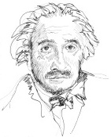

Albert Einstein’ı (1879-1955) siyah bıyıklı ve bir tutam beyaz saçlı yaşlı bir profesör olarak resmetmeye meyilliyizdir, ama gerçekte o matematik ve fiziğe en büyük katkıları sağladığında sadece yirmi altı yaşındaydı. 1905’te İsviçre’nin Bern kentinde patent ofisinde bir memur olarak çalışırken Einstein, her biri deha ürünü olarak görülen dört makale yazdı. 1905 yılı, Einstein’ın “mucizeler yılı” (annus mirabilis) olarak bilinir.

Einstein’ın “Işığın Üretimi ve Dönüştürülmesini Gözeten Sezgisel bir Bakış Açısı Üzerine” isimli ilk makalesi, ışığın enerji kuantumları adı verilen enerji paketlerinden oluştuğunu önerdi. Bugün bunları foton olarak adlandırıyoruz. Bu, Einstein’a 1921’de fizik dalında Nobel Ödülü kazandıran kuramıydı.
Einstein’ın ikinci makalesi, atomların varlığı için ilk deneysel kanıtların bazılarını sundu. 1905’ten önce maddenin en küçük yapı taşı olarak bilinen atom fikri, kullanışlı teorik bir kavram olarak görüldü. Einstein, Brownian Hareketi diye adlandırdığı sıvı içinde geciken parçacıkların hareketini tarif etti ve maddenin temeli olan bir yapısı olması gerektiğini kanıtladı. O yapı, modern atom kavramı ile açıklandı.
Einstein’ın üçüncü ve dördüncü makaleleri, onu en fazla ünlendiren konuyu –özel görelilik kuramını – ele almasıydı. Kuram, enerji ile kütle arasındaki ilişkiyi, ünlü E=mc² - bir cismin enerjisi onun kütlesi ile ışık hızının karesinin çarpımına eşittir – denklemiyle açıkladı. En basite indirgenmiş açıklamasıyla bu, kütlenin bir enerji formu olduğu anlamına gelir.
EK BİLGİLER:
1. Einstein’ın görelilik teorisi üzerine olan makaleleri, on altı yaşında başladığı çalışmasının bir devamıydı.
2. Einstein’ın Başkan Franklin Roosevelt’i II. Dünya Savaşı sırasında nükleer bomba yapması için cesaretlendirmesine rağmen, aktif şekilde nükleer silahsızlanmaya destek verdi. Bir keresinde “III. Dünya Savaşı’nda savaşılacak silahların neler olduğunu bildiğim kadar IV. Dünya Savaşı’nın da sopalar ve taşlarla yapılacağını biliyorum,” demişti.
3. Einstein’dan, İsrail’in ikinci cumhurbaşkanı olması istenmişti; ama o, insanları yönetme becerisi olmadığını söyleyerek bu teklifi reddetti.